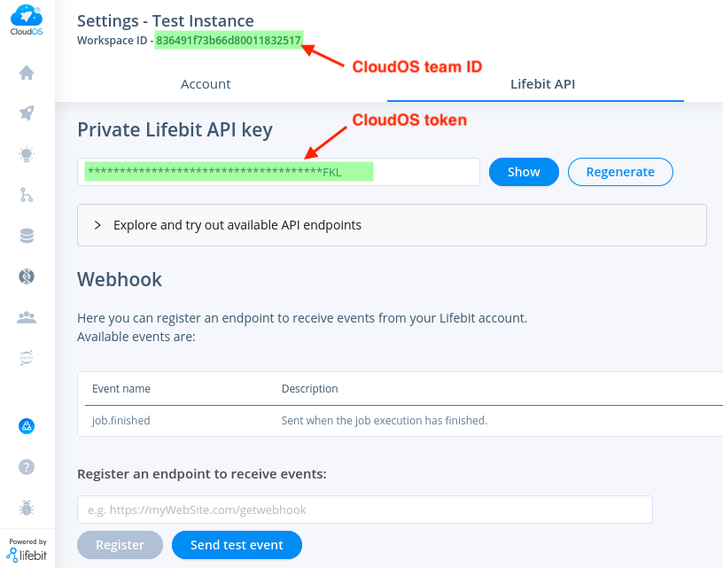

cloudos R package makes it easy to interact with Lifebit’s CloudOS https://cloudos.lifebit.ai/ platform in an R environment.
Installation
You can install the latest release of cloudos from GitHub.
if (!require(remotes)) { install.packages("remotes") }
remotes::install_github("lifebit-ai/cloudos")We are currently working towards making the package available through CRAN.
Usage
Below is a demonstration of how the cloudos package can be used.
Load the library
library(cloudos)
#>
#> Welcome to Lifebit's CloudOS R client
#> For Documentation visit - https://lifebit-ai.github.io/cloudos/
#> This package is under activate development. If you found any issues,
#> Please reach out here - https://github.com/lifebit-ai/cloudos/issues
library(knitr) # For better visualization of wide dataframes in this README examples
library(magrittr) # For pipeConfigure CloudOS
This package is primarily a means of communicating with a CloudOS instance using it’s API. Before it can communicate with the CloudOS instance, the package must be configured with some key information: - The CloudOS base URL. This is the URL in your browser when you navigate to the Cohort Browser in CloudOS. Often of the form https://my_instance.lifebit.ai/app/cohort-browser. - The CloudOS token. Navigate to settings page in CloudOS to generate an API key you can use as your token (see image below). - The CloudOS team ID. Also found in the settings page in CloudOS labelled as the “Workspace ID” (see image below).

The package will look for this information in the following locations in this order:
- From environment variables
CLOUDOS_BASEURL,CLOUDOS_TOKEN, andCLOUDOS_TEAMID. - From a cloudos configuration file.
There are three ways to configure the package:
- Add them to
~/.Renvironin the following way, which will load the environment variables on beginning of the R-session
CLOUDOS_BASEURL="xxx"
CLOUDOS_TOKEN="xxx"
CLOUDOS_TEAMID="xxx"- Add them during an R session using
Sys.setenv(ENV_VAR = "env_var_value")
Sys.setenv(CLOUDOS_BASEURL = "xxx")
Sys.setenv(CLOUDOS_TOKEN = "xxx")
Sys.setenv(CLOUDOS_TEAMID = "xxx")- Use the function
cloudos_configure(), which will create a~/.cloudos/configthat will persist between R sessions and be read from each time (Recommended way if you are using multiple cloudos clients).
cloudos_configure(base_url = "xxx",
token = "xxx",
team_id = "xxx")Application - Cohort Browser
Cohort Browser is part of Lifebit’s CloudOS offering. Let’s explore how to interact with this in R environment.
List Cohorts
To check list of available cohorts in a workspace.
cohorts <- cb_list_cohorts()
#> Total number of cohorts found: 3. Showing 10 by default. Change 'size' parameter to return more.
cohorts %>% head(n=5) %>% kable()| id | name | description | number_of_participants | number_of_filters | created_at | updated_at |
|---|---|---|---|---|---|---|
| 610d3004597aa12e251abdf2 | cohort-hms | This cohort is for testing purpose, created from R. | 20778 | 0 | 2021-08-06T12:50:12.242Z | 2021-08-06T13:25:00.192Z |
| 610ac00edb7c7a1d9d0c309f | il_test01 | NA | 415 | 2 | 2021-08-04T16:27:58.708Z | 2021-08-04T16:30:06.253Z |
| 60feab0767a6666b8bf9e11b | Manos Test | NA | 530 | 0 | 2021-07-26T12:31:03.458Z | 2021-08-04T13:02:46.731Z |
Create a cohort
To create a new cohort.
my_cohort <- cb_create_cohort(cohort_name = "Cohort-R",
cohort_desc = "This cohort is for testing purpose, created from R.")
#> Cohort created successfully.
my_cohort
#> Cohort ID: 610d47d7597aa12e251abdf4
#> Cohort Name: Cohort-R
#> Cohort Description: This cohort is for testing purpose, created from R.
#> Number of phenotypes in query: 1
#> Cohort Browser version: v2Get a cohort
Get a available cohort in to a cohort R object. This cohort object can be used in many different other functions.
other_cohort <- cb_load_cohort(cohort_id = "610ac00edb7c7a1d9d0c309f")
other_cohort
#> Cohort ID: 610ac00edb7c7a1d9d0c309f
#> Cohort Name: il_test01
#> Cohort Description:
#> Number of phenotypes in query: 2
#> Cohort Browser version: v2Explore available phenotypes
Search phenotypes
Search for phenotypes based on a term. Searching with term = "" will return all the available phenotypes.
disease_phenotypes <- cb_search_phenotypes(term = "disease")
#> Total number of phenotypic filters found - 18
disease_phenotypes %>% head(n=5) %>% kable()| id | name | description | array | type | valueType | units | bucket500 | bucket1000 | bucket2500 | bucket5000 | bucket300 | bucket10000 | categoryPathLevel1 | categoryPathLevel2 | instances | Sorting | coding | descriptionParticipantsNo | link | descriptionStability | descriptionCategoryID | descriptionItemType | descriptionStrata | descriptionSexed | orderPhenotype | instance0Name | instance1Name | instance2Name | instance3Name | instance4Name | instance5Name | instance6Name | instance7Name | instance8Name | instance9Name | instance10Name | instance11Name | instance12Name | instance13Name | instance14Name | instance15Name | instance16Name |
|---|---|---|---|---|---|---|---|---|---|---|---|---|---|---|---|---|---|---|---|---|---|---|---|---|---|---|---|---|---|---|---|---|---|---|---|---|---|---|---|---|---|---|
| 28 | Rare diseases family sk | Database identifier for a rare disease family | 1 | text_search | Text | FALSE | FALSE | FALSE | FALSE | FALSE | FALSE | Basic characteristics | NA | 1 | 89132 | https://cnfl.extge.co.uk/pages/viewpage.action?pageId=147659370 | Main 100k Programme | |||||||||||||||||||||||||
| 29 | Rare diseases family id | A locally-allocated family identifier assigned to the proband and their relatives. This should be unique to this duo or trio within the GMC and is necessary for linking related participants. | 1 | text_search | Text | FALSE | FALSE | FALSE | FALSE | FALSE | FALSE | Basic characteristics | NA | 1 | 89132 | https://cnfl.extge.co.uk/pages/viewpage.action?pageId=147659370 | Main 100k Programme | |||||||||||||||||||||||||
| 177 | Cancer disease sub type (HPO) | The subtype of the cancer in question, recorded against a limited set of supplied enumerations. | 4 | bars | Categorical multiple | FALSE | FALSE | FALSE | FALSE | FALSE | FALSE | Cancer | Participant disease | 1 | 17404 | https://cnfl.extge.co.uk/pages/viewpage.action?pageId=147659370 | Main 100k Programme | |||||||||||||||||||||||||
| 178 | Cancer disease type | The cancer type of the tumour sample submitted to Genomics England. | 4 | bars | Categorical multiple | FALSE | FALSE | FALSE | FALSE | FALSE | FALSE | Cancer | Participant disease | 1 | 17404 | https://cnfl.extge.co.uk/pages/viewpage.action?pageId=147659370 | Main 100k Programme | |||||||||||||||||||||||||
| 206 | Disease group | Top-level classification of rare diseases (project specific) | 5 | bars | Categorical multiple | FALSE | FALSE | FALSE | FALSE | FALSE | FALSE | Rare disease | Participant disease | 1 | 39913 | https://cnfl.extge.co.uk/pages/viewpage.action?pageId=147659370 | Main 100k Programme |
Let’s choose a phenotype from the above table. The “id” is the most important part as it will allow us to use this phenotype for cohort queries and other functions.
# get the first row/phenotype in the table
my_phenotype <- disease_phenotypes[5,]
my_phenotype %>% kable()| id | name | description | array | type | valueType | units | bucket500 | bucket1000 | bucket2500 | bucket5000 | bucket300 | bucket10000 | categoryPathLevel1 | categoryPathLevel2 | instances | Sorting | coding | descriptionParticipantsNo | link | descriptionStability | descriptionCategoryID | descriptionItemType | descriptionStrata | descriptionSexed | orderPhenotype | instance0Name | instance1Name | instance2Name | instance3Name | instance4Name | instance5Name | instance6Name | instance7Name | instance8Name | instance9Name | instance10Name | instance11Name | instance12Name | instance13Name | instance14Name | instance15Name | instance16Name |
|---|---|---|---|---|---|---|---|---|---|---|---|---|---|---|---|---|---|---|---|---|---|---|---|---|---|---|---|---|---|---|---|---|---|---|---|---|---|---|---|---|---|---|
| 206 | Disease group | Top-level classification of rare diseases (project specific) | 5 | bars | Categorical multiple | FALSE | FALSE | FALSE | FALSE | FALSE | FALSE | Rare disease | Participant disease | 1 | 39913 | https://cnfl.extge.co.uk/pages/viewpage.action?pageId=147659370 | Main 100k Programme |
Get distribution of cohort participants for a phenotype
Let’s check the numbers of participants across the categories of this phenotype.
# phenotype
my_pheno_data <- cb_get_phenotype_statistics(cohort = my_cohort,
pheno_id = my_phenotype$id)
my_pheno_data %>% head(n=10) %>% kable()| _id | number | total |
|---|---|---|
| Metabolic disorders | 125 | 5090 |
| Ultra-rare disorders | 272 | 5090 |
| dysmorphic and congenital abnormality syndromes | 3 | 5090 |
| Skeletal disorders | 109 | 5090 |
| Respiratory disorders | 37 | 5090 |
| Endocrine disorders | 121 | 5090 |
| Dermatological disorders | 68 | 5090 |
| Tumour syndromes | 228 | 5090 |
| tumour syndromes | 3 | 5090 |
| Psychiatric disorders | 5 | 5090 |
Update a cohort with a new query
A query defines what particpants are included in a cohort based on phenotypes.
Phenotypes can be continuous - in which case a selected range needs to be specified, or they can be categorical - in which case selected categories need to be specified.
Continuous phenotype
For phenotype “Year of birth” (with id = 8)
# cb_get_phenotype_metadata(8)$name
# "Year of birth"
cb_get_phenotype_statistics(cohort = my_cohort, pheno_id = 8) %>% head(n=10) %>% kable()| _id | number | total |
|---|---|---|
| 1923 | 3 | 44667 |
| 1924 | 9 | 44667 |
| 1925 | 8 | 44667 |
| 1926 | 4 | 44667 |
| 1927 | 16 | 44667 |
| 1928 | 36 | 44667 |
| 1929 | 47 | 44667 |
| 1930 | 60 | 44667 |
| 1931 | 81 | 44667 |
| 1932 | 105 | 44667 |
Categorical phenotype
For phenotype “Total full brothers” (with id = 48).
# cb_get_phenotype_metadata(48)$name
# "Total full brothers"
cb_get_phenotype_statistics(cohort = my_cohort, pheno_id = 48) %>% kable()| _id | number | total |
|---|---|---|
| 0 | 4248 | 13276 |
| 1 | 7791 | 13276 |
| 2 | 1237 | 13276 |
Simple query
Now let’s restrict our cohort to a set of participants based on the phenotypes we explored above.
Simple queries allow us to create a cohort query that combines a list of phenotype criteria according to a logical AND. Let’s define a simple query using the following named list-based format (note the phenotype id is quoted):
# year of birth: 1965 - 1995 ; AND total full brothers: 1 or 2
simple_query = list("8" = list("from" = 1965, "to" = 1995),
"48" = c(1, 2))Let’s check how many participants would be in the cohort if we applied this query, but without actually applying it.
cb_participant_count(cohort = my_cohort, simple_query = simple_query, keep_query = F)
#> $total
#> [1] 44667
#>
#> $count
#> [1] 2883If we’re happy that this is a sensible query to apply, we can apply the query to the cohort, making sure to override the previous query by setting keep_query to FALSE. If we wanted to keep the criteria from the pre-exisitng query and add our new phenotype-based criteria to them we would leave keep_query set to the defualt value of TRUE.
# apply the query
cb_apply_query(cohort = my_cohort, simple_query = simple_query, keep_query = F)
#> Query applied sucessfully.
# update the local cohort object with info from the changed version on the server
my_cohort <- cb_load_cohort(my_cohort@id)
# double check that the cohort has th number of participants we expected
cb_participant_count(cohort = my_cohort)
#> $total
#> [1] 44667
#>
#> $count
#> [1] 2883We could now further restrict our cohort to include only females (phenotype “Participant phenotypic sex”, id = 10) by using keep_query = TRUE. In other words, this argument applies a query that looks like “old query AND new query”.
# apply the query
cb_apply_query(cohort = my_cohort, simple_query = list("10" = "Female"), keep_query = T)
#> Query applied sucessfully.
# update the local cohort object with info from the changed version on the server
my_cohort <- cb_load_cohort(my_cohort@id)
# check the number of participants
cb_participant_count(my_cohort)
#> $total
#> [1] 44667
#>
#> $count
#> [1] 1457Advanced query
We could adjust our previous filter to restrict participants to those who are born from 1965 to 1995 OR have 1 or 2 full brothers as well as being female (( Total full brothers = 1, 2 OR 1965 < Year of birth < 1995 ) AND Participant phenotypic sex = Female). We could achieve this with an advanced query which uses a more complicated (but more flexible) nested list format (note the phenotype id is not quoted):
adv_query <- list(
"operator" = "AND",
"queries" = list(
list("id" = 10, "value" = "Female"),
list(
"operator" = "OR",
"queries" = list(
list("id" = 8, "value" = list("from" = 1965, "to" = 1995)),
list("id" = 48, "value" = c(1, 2))
)
)
)
)Available operators in advanced queries: "AND", "OR", "NOT".
Lets apply this query to our cohort and inspect the distribution of our phenotype of interest in the cohort.
# apply the query
cb_apply_query(cohort = my_cohort, adv_query = adv_query, keep_query = F)
#> Query applied sucessfully.
# update the local cohort object with info from the changed version on the server
my_cohort <- cb_load_cohort(my_cohort@id)
# view the distribution of disease groups in our cohort
cb_get_phenotype_statistics(cohort = my_cohort, pheno_id = 206) %>% head(n=10) %>% kable()| _id | number | total |
|---|---|---|
| Hearing and ear disorders | 33 | 1731 |
| Growth disorders | 14 | 1731 |
| Endocrine disorders | 34 | 1731 |
| Dermatological disorders | 31 | 1731 |
| Respiratory disorders | 8 | 1731 |
| dysmorphic and congenital abnormality syndromes | 2 | 1731 |
| Skeletal disorders | 37 | 1731 |
| Ophthalmological disorders | 148 | 1731 |
| neurology and neurodevelopmental disorders | 4 | 1731 |
| Tumour syndromes | 76 | 1731 |
Retreive the participant table
Now lets get a participant phenotype table with the columns of interest for our cohort.
First we have to update the cohort on the cohort browser server to set what columns will be in the table. Currently the best way to do this is to use (counterintuitively) cb_apply_query to add the IDs of the phenotypes of interest as columns.
cb_apply_query(my_cohort, column_ids = c(208, 10, 8, 48), keep_columns = T)
#> Query applied sucessfully.
my_cohort <- cb_load_cohort(my_cohort@id)Now we can fetch the participant phenotype table which includes these columns.
pheno_df <- cb_get_participants_table(cohort = my_cohort,
page_size = cb_participant_count(my_cohort)$count)
pheno_df %>% head(n=10) %>% kable()| EID | Programme | Handling gmc | Year of birth | Participant ethnic category | Participant karyotypic sex | Participant type | Specific disease | Participant phenotypic sex | Total full brothers |
|---|---|---|---|---|---|---|---|---|---|
| 1000020 | Rare Diseases | North Thames | 1970 | Not Stated | Unknown | Relative | NA | Female | NA |
| 1000397 | Rare Diseases | North Thames | 1999 | Mixed: White and Asian | Not Supplied | Proband | NA | Female | 2 |
| 1000411 | Cancer | Yorkshire and Humber | 1966 | White: British | NA | NA | NA | Female | NA |
| 1000673 | Rare Diseases | Genomics Network Alliance | 2012 | Asian or Asian British: Pakistani | Not Supplied | Proband | Osteogenesis imperfecta | Female | 1 |
| 1001010 | Rare Diseases | West Midlands | 1970 | White: British | Not Supplied | Proband | NA | Female | 0 |
| 1001033 | Rare Diseases | North East and Cumbria | 1986 | Not Stated | Not Supplied | Proband | Intellectual disability | Female | NA |
| 1001429 | Rare Diseases | West Midlands | 1981 | White: British | Not Supplied | Relative | NA | Female | NA |
| 1001667 | Rare Diseases | Genomics Network Alliance | 1986 | White: British | Not Supplied | Relative | NA | Female | NA |
| 1001712 | Rare Diseases | Genomics Network Alliance | 1983 | White: British | Not Supplied | Relative | NA | Female | NA |
| 1001749 | Cancer | West London | 1965 | Not Known | NA | NA | NA | Female | NA |
Get genotypic table
Get the genotypic table for a cohort (currently only cohort browser version 1 is supported).
cohort_genotype <- cb_get_genotypic_table(cohort = my_cohort)
cohort_genotype %>% head(n=2) %>% kable()Additional notes
This package is under activate development. If you find any issues, please reach out here - https://github.com/lifebit-ai/cloudos/issues
For documentation visit - https://lifebit-ai.github.io/cloudos/
License
MIT © Lifebit